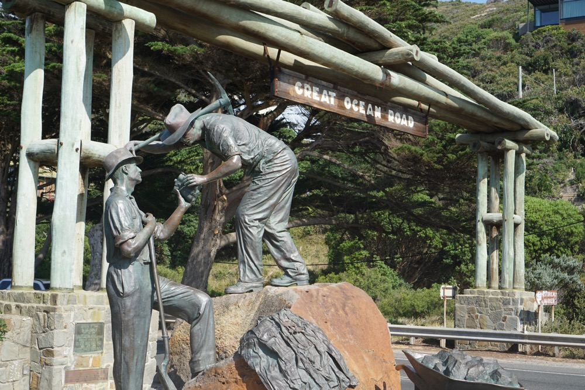

The Great Ocean Road

Arrival and Trolly Tour
We arrived in Melbourne and took a little dinner tour of the city on a dinner trolly. We thought it would be mediocre food, but a good way to see the city. It turned out that the food was better than expected, and in the end …
more ...